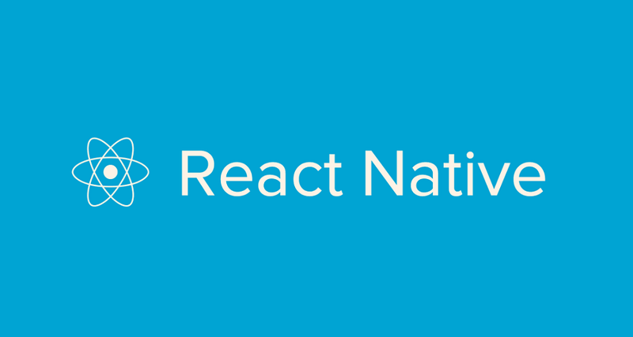
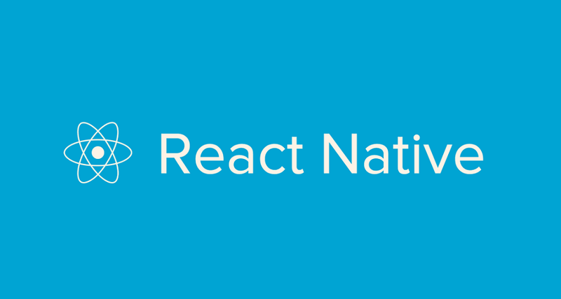

Biografia
Meu nome é Willian Santos Lima, tenho 26 anos, casado, sou apaixonado por tecnologia, games e música. Desde pequeno jogador de super nintendo sempre achei curioso como funcionavam as coisas, durante a adolescencia meu pai entrou em um curso de técnologia, por conta disso ele sempre chegava em casa com livros, através disso fui adquirindo conhecimento na área, lendo e estudando sempre.
Perto dos 18 anos iniciei o meu primeiro curso na área de computação, porém, no curso em que eu estudava eu aparentava saber mais do que os professores que aparentemente eram estágiarios, no curso aprendi Delfi e Visual basic, através disso me apaixonei por códigos.
Trabalhando até o momento com as seguintes tecnologias
 
